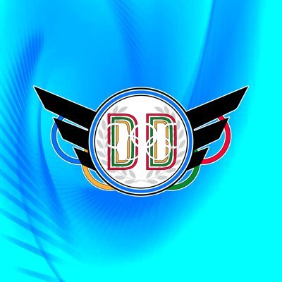

🏅
Deporte español
Próximamente, toda la actualidad deportiva
Un espacio para seguir las noticias, resultados y protagonistas de nuestras disciplinas deportivas.

DDEPORTES DANIEl deporte español tiene su espacio. Noticias, protagonistas, deportistas clasificados, mínimas y sistemas de clasificación.
Las novedades del deporte español.
02 / PROTAGONISTASSeguimiento de las plazas españolas.
03 / MARCASRequisitos para competir.
04 / COMPETICIONESCómo conseguir una plaza.
Noticias y novedades del deporte español.
Un espacio para seguir las noticias, resultados y protagonistas de nuestras disciplinas deportivas.
Seguimiento de los procesos de clasificación y de los deportistas españoles.
Clasificación, reglamentos, modalidades y protagonistas del deporte paralímpico.
Consulta los deportistas españoles y las plazas conseguidas para las próximas grandes competiciones.
| Deportista | Deporte | Competición | Modalidad | Estado |
|---|---|---|---|---|
| Cargando clasificados... | ||||
Información sobre las marcas exigidas para acceder a campeonatos.
Marcas, rankings y periodos oficiales de clasificación.
Marcas, clases deportivas y criterios de acceso.
Requisitos de acceso a campeonatos del mundo y de Europa.
Consulta los criterios oficiales de acceso a las grandes competiciones.
Consulta los organismos de referencia.